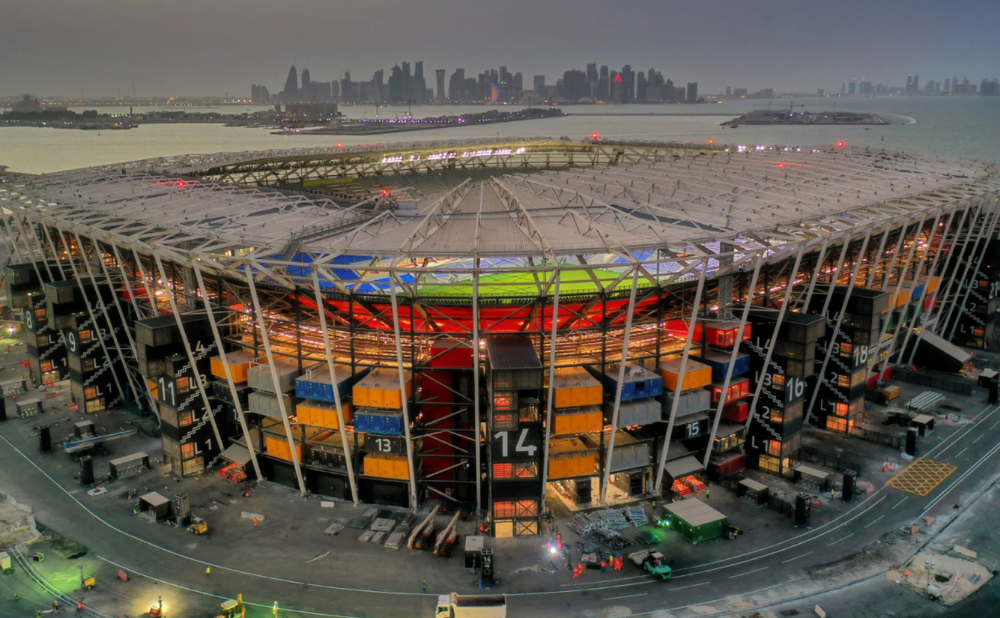
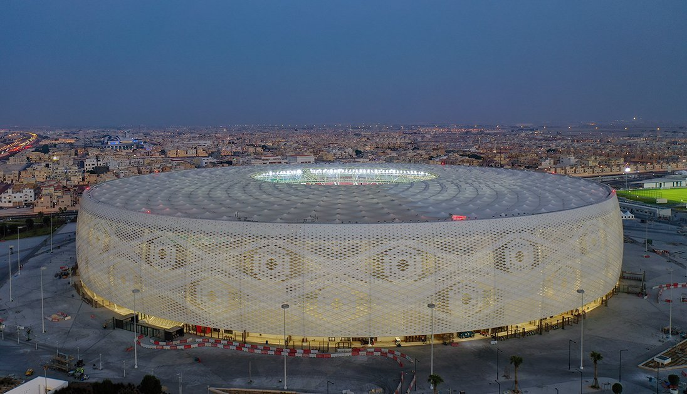

| Conheça os Estadios! | |||
| 974 | Ahmad bin Ali | Al Bayt | Al Janoub |
| Al Thumama | Education City | Khalifa | Lusail |
| Considerado um dos designs mais inovadores dentre todas as 8 estruturas, o Estádio 974, conhecido anteriormente como Ras Abou Aboud, é inspirado pelo comércio internacional e marítimo do Catar. O número 974 é altamente significativo para o projeto, já que é o código internacional telefônico do país, assim como o número de containers utilizados na construção. A estrutura fica na orla oposta ao skyline da Baía Oeste de Doha. Já que é majoritariamente feito por containers de navios, o estádio de 40 mil lugares será completamente desmontado após o fim da Copa do Mundo e utilizado como um complexo à beira mar para a comunidade local. O estádio foi inaugurado no dia 20 de novembro de 2021, em um lançamento digital. |  |
| Data | Hora | Jogo | Grupo |
|---|---|---|---|
| 22/11 | 13h | México X Polônia | C |
| 24/11 | 13h | Portugal X Gana | H |
| 26/11 | 13h | França X Dinamarca | D |
| 28/11 | 13h | Brasil X Suíça | G |
| 30/11 | 16h | Polônia X Argentina | C |
| 2/12 | 16h | Sérvia X Suíça | G |
| Casa de um dos times mais celebrados do Catar na cidade de Al Rayyan, o estádio Ahmad bin Ali celebra a união de sua comunidade ao incorporar símbolos das tradições e da cultura catari. Uma das principais características do projeto é a fachada ondulada, composta por padrões que caracterizam diferentes aspectos do país, como "a importância da família, a beleza do deserto, a flora e a fauna nativas, além do comércio local e internacional". 40 mil torcedores ficarão protegidos por uma cobertura leve e por sistemas de resfriamento avançados, garantindo conforto durante as partidas. Batizada de "portal do deserto", a arena abriu suas portas em dezembro de 2020, para final da Copa Amir. | |
| Data | Hora | Jogo | Grupo |
|---|---|---|---|
| 21/11 | 16h | Estados Unidos X ??? | B |
| 23/11 | 16h | Bélgica X Canadá | F |
| 25/11 | 7h | ??? X Irã | B |
| 27/11 | 7h | Japão X ??? | E |
| 29/11 | 16h | ??? X Inglaterra | B |
| 1/12 | 12h | Croácia X Bélgica | F |
| Inspirado pelas barracas tradicionais nômades, o estádio de 60 mil lugares deve será palco da partida de estreia da Copa do Mundo FIFA 2022™, e vai receber partidas até a fase semifinal. Localizado na cidade de Al Khor, no norte, cidade famosa pelos mergulhadores e pesca de pérolas que sempre convidaram os habitantes do deserto até a costa ao longo dos anos, o design do estádio homenageia o passado e o presente do Catar, destacando a cultura, tradições e história da cidade. Semelhante às barracas nômades, a parte superior da arquibancada é um design modular portátil, que será removido no decorrer do campeonato, e oferecido a países em desenvolvimento necessitados de infraestrutura para a prática de esportes. O projeto do estádio foi revelado em meados de 2014 pelo Comitê Supremo para Entrega e Legado (SC) e Fundação Aspire Zone, e foi inaugurado no início de 2020 no dia nacional dos Esportes no Catar. | |
| Data | Hora | Jogo | Grupo |
|---|---|---|---|
| 21/11 | 13h | Catar X Equador | A |
| 23/11 | 7h | Marrocos X Croácia | F |
| 25/11 | 16h | Inglaterra X Estados Unidos | B |
| 27/11 | 16h | Espanha X Alemanha | E |
| 29/11 | 12h | Holanda X Catar | A |
| 1/12 | 16h | Camarões X Brasil | G |
 |
Construído em Al Wakrah, uma das áreas mais antigas a serem habitadas ao sul de Doha, e encaixado em um lugar culturalmente rico com uma profunda herança arquitetônica, o projeto é inspirado pelo histórico da cidade com seus mergulhadores de pérolas, pescadores e barcos veleiros dhow. O recinto de 40 mil lugares foi inaugurado em 16 de maio de 2019, coincidindo com a final da Copa Amir. Após a Copa do Mundo, a capacidade do estádio será reduzida para 20 mil torcedores, e os outros 20 mil assentos serão doados a projetos de desenvolvimento de futebol em outros países. Unidades de recreação e hospitalidade, assim como uma escola, espaço de eventos, pistas de ciclismo, hipismo e corrida são algumas das novas amenidades que estão sendo desenvolvidas juntamente do estádio para garantir seu uso no longo prazo. |
| Data | Hora | Jogo | Grupo |
|---|---|---|---|
| 22/11 | 16h | França X ??? | D |
| 24/11 | 7h | Suiça X Camarões | G |
| 26/11 | 7h | Tunísia X ??? | D |
| 28/11 | 7h | Camarões X Sérvia | G |
| 30/11 | 12h | Dinamarca X ??? | D |
| 2/12 | 12h | Gana X Uruguai | H |
| Localizado 12 quilômetros ao sul de Doha, o estádio Al Thumama entrelaça a cultura árabe por sua fachada, se inspirando nos padrões tecidos de uma Gahfiya, tradicional touca usada por homens muçulmanos na região árabe. Além de seu seu desenho, a área em volta do projeto explora a importância da arquitetura ecológica e contextual, buscando a certificação de quatro estrelas do Sistema de Avaliação de Sustentabilidade (GSAS) tanto para o design quanto para a construção. O estádio garante a economia de 40% a mais de água do que um estádio convencional, utilizando água reciclada para irrigar áreas verdes. 50.000 km² de área de parque são integrados no projeto, que utiliza árvores nativas para cobrir 84% da paisagem. O estádio foi inaugurado na 49ª Final da Copa Amir, em 22 de outubro de 2021. |  |
| Data | Hora | Jogo | Grupo |
|---|---|---|---|
| 21/11 | 7h | Senegal X Holanda | A |
| 23/11 | 13h | Espanha X ??? | E |
| 25/11 | 10h | Catar X Senegal | A |
| 27/11 | 10h | Belgica X Marrocos | F |
| 29/11 | 16h | Irã X Estados Unidos | B |
| 1/12 | 12h | Canadá X Marrocos | F |
 |
Situado em um centro vibrante de conhecimento e inovação, o estádio Cidade da Educação é cercado de instalações acadêmicas e organizações esportivas. Devido à sua localização particular na Cidade da Educação, a estrutura foi desenhada com grande foco em acessibilidade. Durante a construção, escavadores descobriram rochas que datam de 20 a 30 milhões de anos atrás, o que os forçou a escavar mais 17 metros para baixo, para que o campo fique ao nível do mar, onde as temperaturas são mais frescas. A fachada apresenta padrões triangulares, uma reimaginação dos arabescos tradicionais, que parecem mudar de cor ao longo do dia, seguindo os movimentos do sol pelo céu. O design foi revelado em 2014, e o estádio foi finalizado e aberto ao público em 2020. |
| Data | Hora | Jogo | Grupo |
|---|---|---|---|
| 22/11 | 10h | Dinamarca X Tunisia | D |
| 24/11 | 10h | Uruguai X Coréia do Sul | H |
| 26/11 | 10h | Polônia X Arábia Saudíta | C |
| 28/11 | 10h | Coréia do Sul X Gana | H |
| 30/11 | 12h | Tunísia X França | D |
| 2/12 | 12h | Coréia do Sul X Portugal | H |
| Construído em 1976 em Al Rayyan, o Estádio Internacional Khalifa é, há muito tempo, um dos estádios mais notáveis do país, e já sediou os Jogos Asiáticos, a Copa do Golfo Árabe e a Copa Asiática AFC, entre outros eventos. Para o Mundial, o estádio é expandido para acomodar 40 mil torcedores e será equipado com "tecnologia de resfriamento inovadora" que permitirá que os jogadores atuem em um ambiente confortável. A estrutura teve a adição de um teto único para abrigar as arquibancadas, ao lado de uma nova estrutura na ala leste que terá praças de alimentação, lojas, salas para vários propósitos, áreas VIPs, museu, e um centro médico. A cerimônia de reabertura aconteceu em 2017. | |
| Data | Hora | Jogo | Grupo |
|---|---|---|---|
| 21/11 | 10h | Inglaterra X Irã | B |
| 23/11 | 10h | Alemanha X Japão | E |
| 25/11 | 13h | Holanda X Equador | A |
| 27/11 | 13h | Croácia X Canadá | F |
| 29/11 | 12h | Equador X Senegal | A |
| 1/12 | 16h | Japão X Espanha | E |
| Com capacidade para 80 mil pessoas, o Estádio Lusail é o maior dos 8 recintos, e vai receber a final da Copa do Mundo FIFA Catar 2022™. O design é inspirado pelo jogo de luz e sombra visto nas lanternas Fanar. A forma estrutural e a fachada repetem os motivos intricados de peças de arte e mobiliário encontradas pelos mundos árabe e islâmico desde suas primeiras civilizações. Devido à sua localização proeminente em Lusail, uma nova metrópole construída, o planejamento master do estádio apresenta um sistema de bondes, e áreas verdes exuberante, o que o transforma em uma arena focada em sustentabilidade que se volta para as necessidades humanas e para a preservação ambiental. Com o fim do evento, o local será transformado em um hub comunitário polivalente, com escolas, lojas, cafés, instalações esportivas e clínicas de saúde. O estádio foi inaugurado no final de 2021. | |

|
| Data | Hora | Jogo | Grupo |
|---|---|---|---|
| 22/11 | 7h | Argentina X Arábia Saudíta | C |
| 24/11 | 16h | Brasil X Sérvia | G |
| 26/11 | 16h | Argentina X México | C |
| 28/11 | 16h | Portugal X Uruguai | H |
| 30/11 | 16h | Arábia Saudíta X México | C |
| 2/12 | 16h | Camarões X Brasil | G |